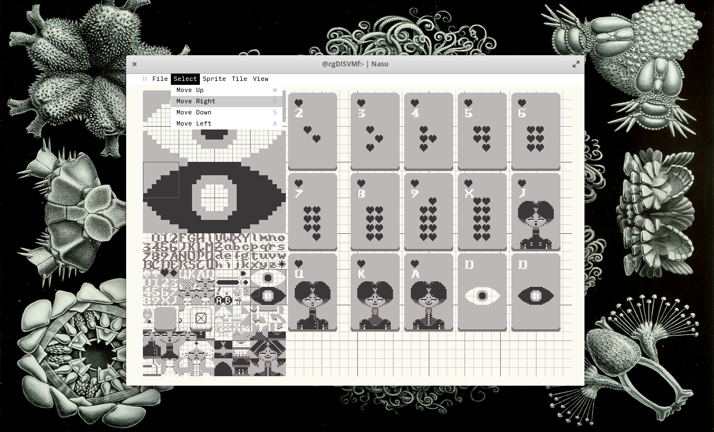

nasu
introduction
Nasu is a spritesheet editor created to help us design and assemble the assets of our famicom games. It can both import and export .chr spritesheets. The viewport displays the project tiles, each tile is 8 by 8 pixels and each pixel is one of 4 colors.
If you wish to learn more about creating 8bit projects, see our 6502 assembly notes. To learn more about Nasu, have a look at the operation manual.

Meet Nasubit, the mascot for Nasu. Nasubit is there to talk about updates relating to Nasu.
story
Back in 2016, we experienced frequent failures with both software & hardware, largely due to our small energy storage and lack of reliable connectivity. The solution was to create tools that would be better suited to our needs. The objective was to replace the bloated, closed-source or subscription software that we were using to do creative work, such as Photoshop, Xcode and Ableton. We were somewhat familiar with web technologies, so we decided to build our programs on this new framework called Electron.
While solving some of our issues, Electron was rapidly increasing in size and soon joined the rest of the software that we wanted to do away with. Our focus shifted toward reducing our energy use, and to ensure reliability by removing all dependencies.
To transition toward our new goals, we developed offline web versions as temporary stand-ins while we researching ways to build more resilient software. We eventually ported our tools to C, but while we had achieved ideal energy usage, portability was still an issue, so we kept looking. We learnt 6502 Assembly, seeing players run our NES game on all these different platforms gave us a new idea.
And so, in 2021 we took our biggest leap yet toward longtermism and designed a small virtual machine with a focus on implementability; meaning that moving forward, our software will live on a virtual machine. In other words, the code will stop having to be ported, but instead to make something available on a new platform would our needs or devices change, the emulator remains the only piece of code to be ported, which is explicitly designed to be easily implemented.
This is where we are now. Uxn may solve our cross-platform issues, while being extremely light. It took us a long while to get here, we hope that one day the Uxn versions of our software replace the desktop and web versions [16.05.21].
Go slow, and fix things.
Distributions
Nasu is available as a standalone application written in portable C89. It is distributed as a single file C file that build into a 20kb executable designed to runs offline and having only SDL2 as dependency.
The application was initially built to help with porting of donsol to the Famicom, and later evolved to include the features of the drawing software Noodle. It is currently used to create both Famicom projects such as Spacetime, and various assets for dotgrid and orca>.
Alternatively, if you don't wish to build the C89 version yourself, and have access to a reliable internet connection, you can use Nasu in your browser.
license
The license applies to all the documented projects, the projects themselves and their assets. The source code of this website and our apps are under the MIT License, but the assets and text content of this website and of our apps are under the BY-NC-SA4.0 License. We are happy to pass knowledge, and that others can learn from our projects, improve on them, or make them into something else that is useful, but please, do not try to sell our projects as is under a different name. Doing so is very lazy, and disrespectful to us.
DO NOT resell or mint our work.
You can find our more recent projects on Sourcehut.
pull request
See the Github and Sourcehut repositories. Pull Requests are welcome, but please read our design philosophy first.